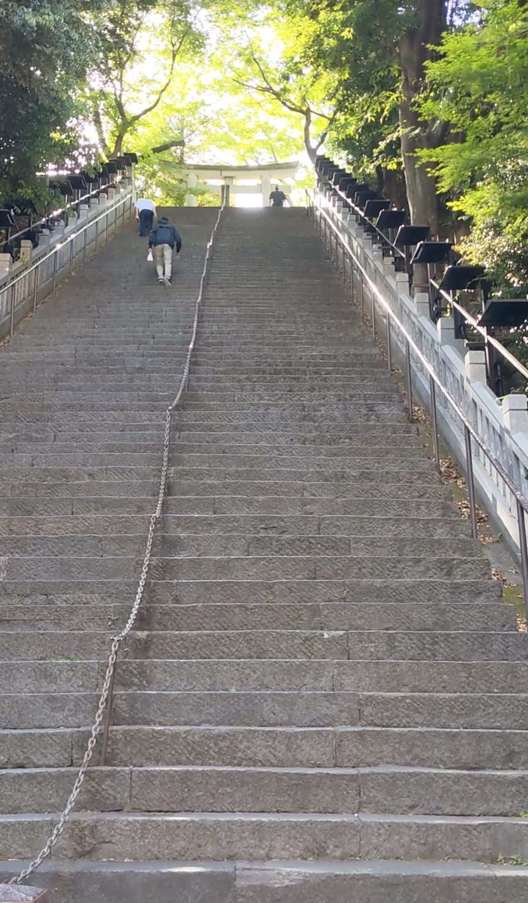
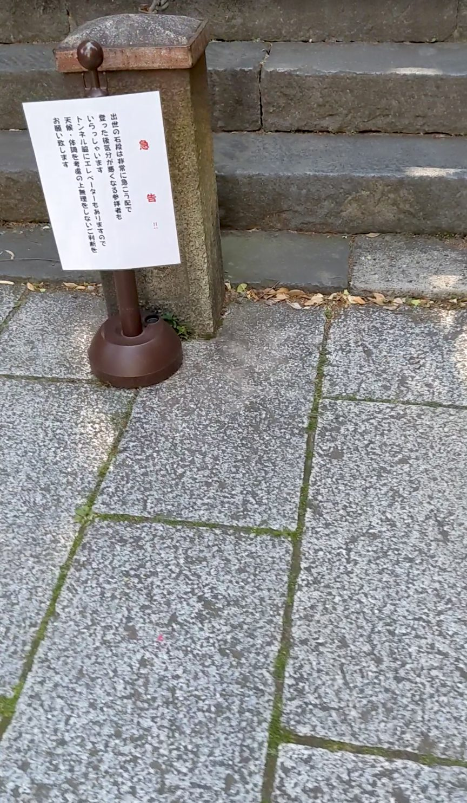
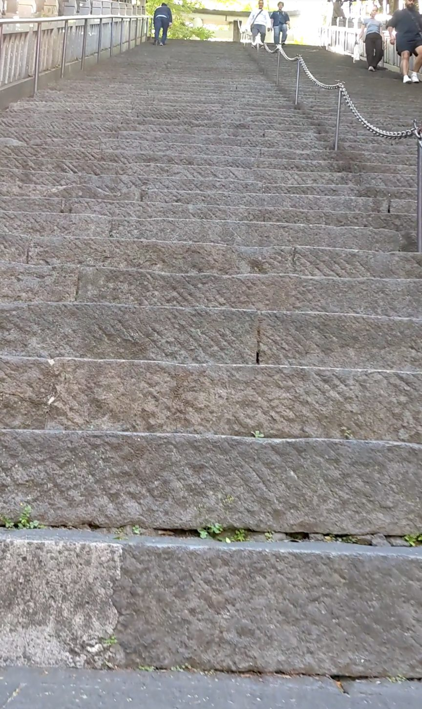
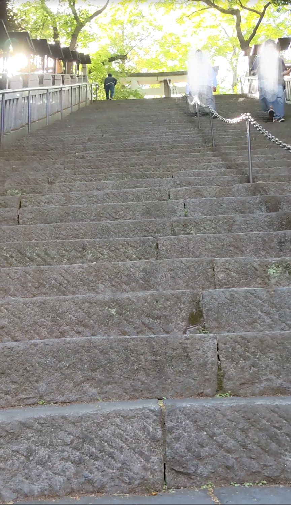
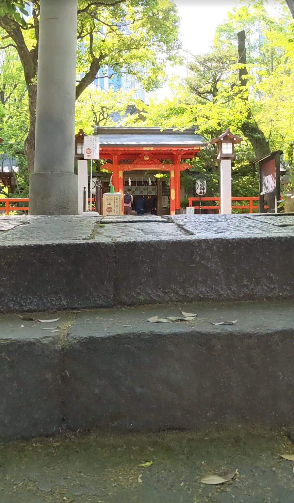
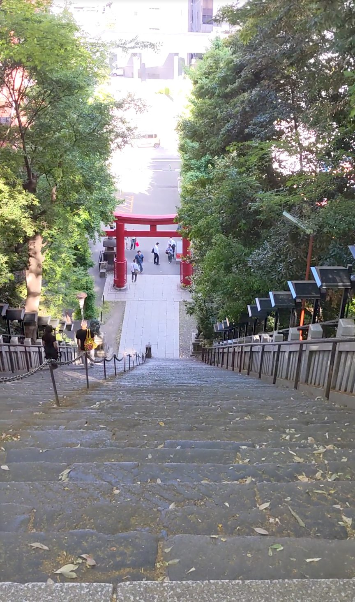

東京都港区愛宕にある愛宕神社の「出世の石段」は、都心でも屈指の急勾配として知られる86段の石段です。東京メトロ日比谷線の神谷町駅から徒歩約5分。いくつか角を曲がったところに突然現れるその石段は、初めて目にすると言葉を失うほどの急さです。「出世の石段」という名の通り、古くから出世や開運を願う参拝者が訪れる、歴史ある石段です。
東京メトロ日比谷線「神谷町駅」下車、徒歩約5分。駅からいくつか角を曲がると愛宕神社の入口に出ます。石段はすぐ目に飛び込んでくるので迷うことはないでしょう。
石段には「急告！」の注意書きがあり、気分が悪くなる場合があるとの案内があります。心臓や足腰に不安のある方は無理をせず、迂回路をご利用ください。登る際は中央の鎖をしっかり握り、一段一段確認しながら登りましょう。雨上がりや濡れた石段は特に滑りやすくなります。グリップのある靴が必須です。
神谷町駅から歩いてほどなく、ふっと左を見ると——な、なんだこれはという石段が目の前に現れます。急勾配の石段がほぼ垂直に見えるほどの角度で上へ続いていて、その中央に鎖が一本。「ロッククライミングかな？」と思わず口から出てしまいました。外国人観光客の姿もたくさんいて、皆さん立ち止まって写真を撮ったり、登るかどうか相談したりしています。

入口のそばに注意書きがあります。「注意！」ではなく「急告！」という表現が目に入りました。気分が悪くなる場合があるとのことで、迂回路の案内もあります。外国人観光客が熱心にその看板を読んでいる姿もありました。読んだ上で、覚悟を決めて登ります。

1段目から容赦ありません。かなり高く足を上げないと次の段に届かない感覚で、序盤からふくらはぎにじわりと負荷がかかってきます。踊り場はありません。休める場所はありません。止まると逆に怖いので、鎖をしっかり握りながら一気に登ります。

きつい登りではありますが、5月の清々しい陽気が救いです。石段の上の木々がそよそよと揺れていて、その柔らかい動きに「もう少し、もう少し」と背中を押してもらいました。視線を少し上げると緑が広がっていて、都心の石段を登っていることを一瞬忘れさせてくれます。

息を切らしながらやっとのことで頂上へ。出迎えてくれたのは、小ぶりながらも凛とした佇まいの愛宕神社の社です。急登をくぐり抜けてたどり着いた先にあるからか、その小ささが逆に清々しく感じられました。

登り切ってから振り返ると、改めてその急さと幅の広さが目に飛び込んできます。急勾配に加えて幅が広いため、スケール感がとにかく大きい。「自分はこれを登ったのか」という達成感と、「これを下りるのか」という新たな緊張が同時にやってきます。下りは特に慎重に、鎖をしっかり握って一段ずつ降りてください。
